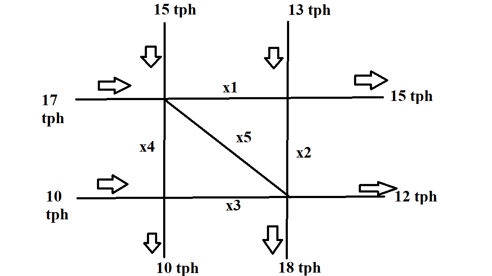

How exactly is linear algebra a key component in many optimization and statistics problems? The answer is solving the title of this section. In most optimization problems, we want to find the best way to allocate resources to accomplish a goal. Not the largest/smallest nor longest/shortest way, but optimal. Deriving from an example in (Yoshida 2021), a freight rail company wants to transport commodities \((x_1, x_2, x_3)\) from one place to another. However, they can’t transport the entire inventory of each commodity at once due to constraints:
\[\begin{align} \left[\begin{array}{@{}ccc|c@{}} 1 & 2 & 3 & 1250 \\ 2 & 1 & 4 & 1800 \\ 0 & 1 & 1 & 300 \end{array}\right] \leftrightarrow \left[\begin{array}{@{}ccc|c@{}} x_1 & 2x_3 & 3x_3 & 1250 \\ 2x_1 & x_2 & 4x_3 & 1800 \\ & x_2 & x_3 & 300 \end{array}\right] \end{align}\]
On the left-hand side (LHS), you have your coefficient matrix which are made up of the unit values from your commodities. \(x_1, x_2, x_3\) are referred to as decision variables since we’re trying to figure out the quantity needed to fulfill our linear equations. On the right-hand side (RHS), we have our constraints which are our limitations or restrictions.
Normally, this problem set would be solved through gaussian elimination and back substitution. Basically, you’re eliminating unknown variables by manipulating equations with elementary row reductions. For example, if I wanted to get rid of \(x_1\) in the 2nd equation, replace the 2nd equation by the sum of multiplying the 1st equation by -2 and the 2nd equation itself. You do this repeatedly until an equation has a single unknown.
\[\begin{align} \left[\begin{array}{@{}ccc|c@{}} -2 & -4 & -6 & -2500 \\ 2 & 1 & 4 & 1800 \\ \hline 0 & -3 & -2 & -700 \end{array}\right] \rightarrow \begin{bmatrix} 1 & 2 & 3 & 150 \\ 0 & -3 & -2 & -700 \\ 0 & 1 & 1 & 300 \end{bmatrix} \rightarrow \begin{bmatrix} 1 & 2 & 3 & 150 \\ 0 & -3 & -2 & -700 \\ 0 & 0 & 3 & 900 \end{bmatrix} \end{align}\]
\(x_3\) results in 300 when dividing the constraint by the coefficient of commodity \(x_3\). For the back substitution, plug in 300 into \(x_3\) in equation 2 to solve for \(x_2\) resulting in 100. Plug both values into their respective values in equation 1 to get 450 for \(x_1\). As a result, \((x_1, x_2, x_3) = (450, 100, 200)\). As our systems of linear equations begin to scale in size, it isn’t practical to solve them by hand. Instead, we will use Python’s scientific computing capabilities.
import numpy as np
A = np.array([[1, 2, 3],
[2, 1, 4],
[0, 1, 1]])
b = np.array([1250, 1800, 300])
def eroLEQ(matrix, constraints):
A = matrix
b = constraints
if A.shape[0] == A.shape[1]:
# Note: linalg.solve only accepts square matrices in the 1st parameter
return np.linalg.solve(A, b)
else:
# lstsq for rectangular matrices
return np.linalg.lstsq(A, b, rcond = None)[0]
eroLEQ(A, b)## array([450., 100., 200.])Even freight trains aren’t immune to waiting for traffic despite being rail-bound. From (Corman, Trivella, and Keyvan-Ekbatani 2021), this paper goes into modeling train behavior in a way similar to driving cars. If you’re in charge of designing railways, knowing how to build railroad networks around the volume of trains is certainly a priority. In the image below, we have a network (admittedly poorly designed) where we have north-south and west-east traffic.
